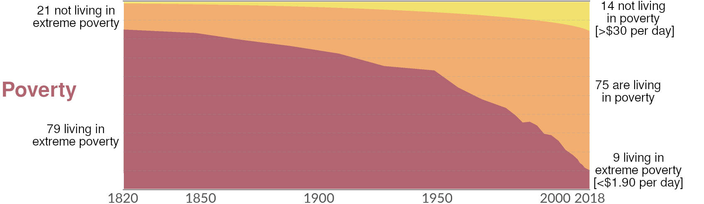
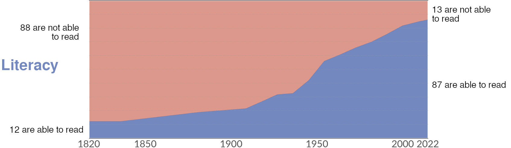
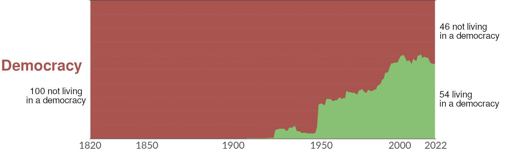
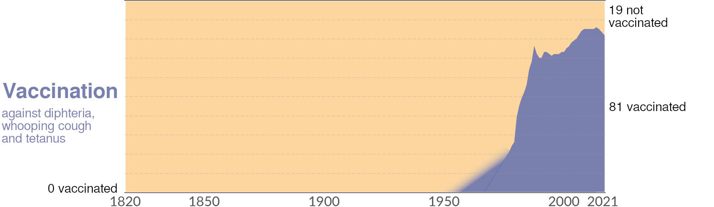
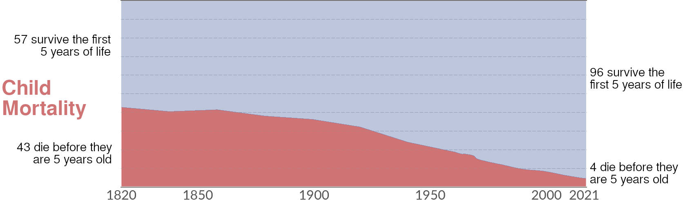

1. Negative Future Outlook
1.1 Stories
Every year, hundreds of thousands of new books are published. According to Google, over 100 million different books exist worldwide.
Humanity is practically drowning in printed words. Anyone can only read a tiny fraction of them, even if they dedicate all their available time to reading. With so many books, everything worth saying should already have been said, shouldn’t it?
Every idea explored, every utopia*1 described, every dystopia* vividly depicted, every story told. And if not every one, then at least something sufficiently similar, just as fables and fairy tales follow certain patterns.
No, not even close.
Try to find positive narratives about the future of humanity! Oh yes, they do exist:
• “The Culture”, a science fiction* series by Iain M. Banks, tells the story of a humanity that has spread across the universe and practices a successful form of anarchy.
• Star Trek is perhaps the most famous example of a fundamentally positive future narrative. In it, humanity is led by a capable government, the problems of capitalism* have been overcome, and money has been abolished. The crews of the research starships can therefore focus on exporting the philosophy of the Federation and helping aliens with their problems.
Of course, the producers eventually found this to not be conflict-driven enough. In various revisions of the Trek universe, the Federation became increasingly burdened with problems until the original positive utopia was quite battered. Nevertheless, the core positive narrative has not been entirely lost.
• In “Perry Rhodan”, a science fiction series written by a German team of authors over decades and spanning more than 3,000(!) issues, a young independent state unites humanity with technology and a vision for a positive future. With combined efforts, humanity evolves over centuries into a galactic civilization that defies all adversities.
• The series “Rational Future”, written by Wayne Edward Clarke, is my final example. In it, a humanity that has significantly advanced not only technologically but also socially—appearing alien to us—faces new dangers and successfully confronts them. Here, however, we’ve arrived at a very obscure author whom I only discovered in a roundabout way.
This list is, of course, not exhaustive, but the roster of such positive science fiction is definitely not long.
The two most successful examples, Star Trek and Perry Rhodan, had their beginnings in 1966 and 1961, respectively—over 50 years ago. Today, such positive narratives no longer seem to emerge. At least none that achieve greater prominence. Because they no longer fit the times. And yet, the success of Star Trek and Perry Rhodan shows that many people want to hear such positive stories.
Compare these positive visions of the future with the number of novels that depict a dystopian future: the alien invasions, the apocalypses, the capitalist excesses of cyberpunk, the Earth alternately desiccated or flooded by climate change*, the emperors who seize power and must now be fought by brave rebels.
It makes sense after all: In a dystopian future, it’s much easier to tell exciting stories. If the heroes don’t overcome the daunting task, humanity remains enslaved, starving, or doomed to extinction. That’s simply more thrilling than writing about someone who has no hardships, lives in a free society, and whose government prevents crises early on, nipping them in the bud.
And to be honest: perhaps many authors simply lack the imagination for such a positive future. A bleak future is easy to conjure up: take a world where no rain falls anymore, or where only corporations decide what happens. Boom—there’s your bleak future.
A positive future, on the other hand—that would require so many things to turn out for the better! You’d have to think all of that through and convey it convincingly to the reader before you could even get to the actual story you want to tell. If you could even think of a compelling story in such a harmonious future...
So, has science fiction made us more pessimistic in how we view the future?
I think so, yes. All the books you read naturally leave their mark. All the visions you encounter through them shape an expectation, a realm of possibilities you consider. If every future you’ve ever read about is defined by war, drought, disease, or brutal corporations, why wouldn’t that also become your expectation for the future?
Science fiction hasn’t been around for all that long, mind. The whole assumption that the future will be different from the present is still quite young. Up until the Middle Ages, the technology an elderly person experienced was hardly different from the technology of their youth. Technological changes happened so slowly and gradually that they unfolded over centuries, barely noticeable within a single human lifespan.
But science fiction novels aren’t the only thing giving us a negative view of the future, nor are they the most important. After all, not everyone reads science fiction. But almost everyone sees the present as far worse than it really is and expects further deterioration in the future. Why?
Uh, wait, but the present really is that bad, is it not!? All the wars, all the suffering, the starving children, the corruption, all the murders and accidents—it’s an endless list!
It’s true: the number of bad news stories we consume day after day is indeed seemingly endless. But let’s take a look at some statistics about suffering:
The World as 100 People





As can be seen from these graphs and figures, over the past 200 years (since 1820), education has significantly improved, while poverty and child mortality have drastically declined! Honestly, did you know that? Would you have expected it?
Or let’s think about the field of technology: Even if every new device has its downsides, who would seriously want to give up their smartphone, the internet, their coffee machine, or their toilet? Light bulbs, or LEDs?
All these inventions are not terribly old. The first patent for a light bulb was granted in 1841: that’s less than 200 years ago!
In short: The material world, the conditions in which we humans live, have objectively massively improved over the past 200 years. And not in waves, but consistently. Every decade better than the one before, with small dips for the two world wars.
And yet, we all feel like everything is steadily getting worse. And we’ve had this feeling at least for decades.